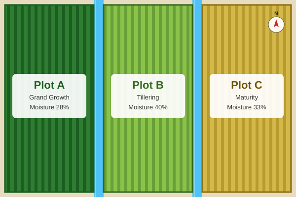

Plot A
Crop: Sugarcane (Grand Growth stage)
Soil Type: Clay Loam
Current Soil Moisture: 28%
Smart Irrigation using AI & Sensor Technology
Click on a plot region in the map below to jump to its details.

Crop: Sugarcane (Grand Growth stage)
Soil Type: Clay Loam
Current Soil Moisture: 28%
Crop: Sugarcane (Tillering stage)
Soil Type: Sandy Loam
Current Soil Moisture: 40%
Crop: Sugarcane (Maturity stage)
Soil Type: Loamy
Current Soil Moisture: 33%